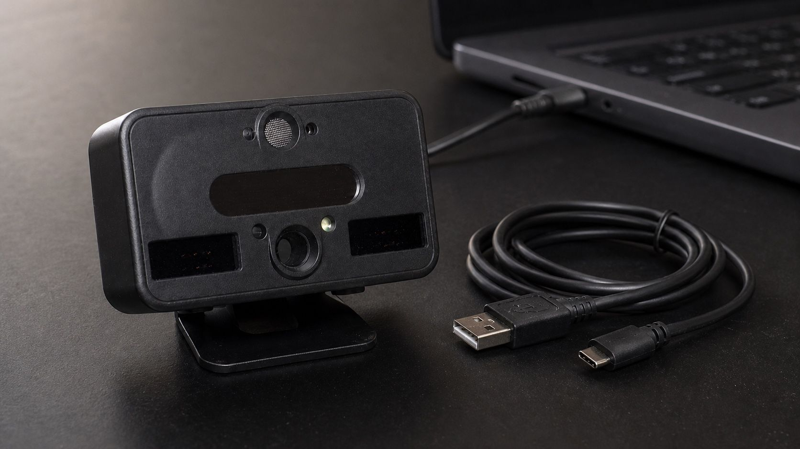
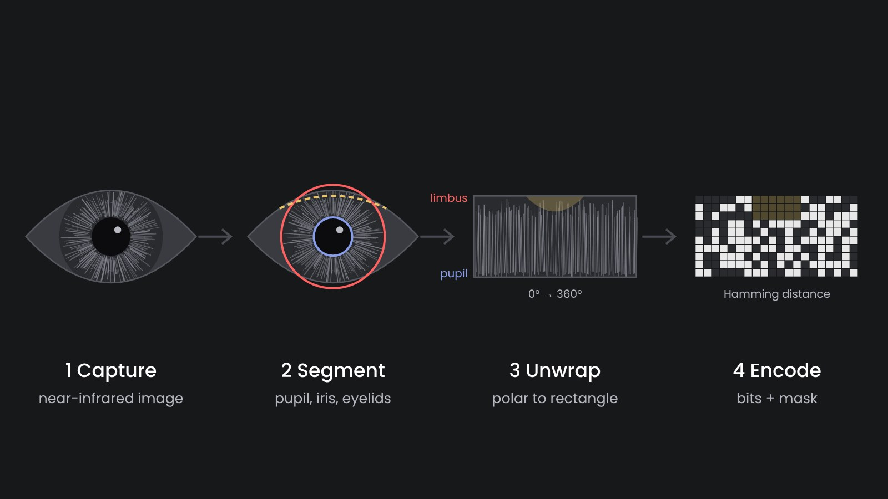

How Iris Recognition Works

How does a machine recognize a person by the eye? The approach has not changed much since John Daugman described it in the 1990s, and our Cloud Iris API follows it too. The system takes a near-infrared picture of the eye, finds the iris, unrolls it into a rectangle, turns its texture into bits and compares these bits with the bits of other people. Each step is simple to describe. The accuracy of the whole system depends on how carefully each one is implemented, so below I go through them one by one.
1. Capture
Iris cameras photograph the eye in near-infrared light, roughly 700–900 nm. Why not in normal light? In visible light a dark brown iris looks almost uniform, and most people in the world have brown eyes. In infrared the same iris shows its crypts, furrows and rings, because melanin absorbs much less infrared than visible light. On top of that, the camera brings its own illumination, so a picture taken in a sunny office and one taken in a dim tent look alike.
The standards ask for about 150–200 pixels across the iris. A dedicated scanner, such as an Iritech IriShield on a USB cable or a Vista EY2 on a desk, gets there at 20–40 cm. A phone camera without infrared illumination usually does not, which is why phones use face recognition rather than iris.
A good scanner also checks quality before it keeps a frame: focus, motion blur, how open the eye is, gaze direction. Most errors in iris recognition start at this stage. This way a scanner that refuses a blurry frame saves a lot of trouble later.
2. Segmentation
Then the software locates two boundaries: the pupil (inner) and the limbus, where the iris meets the white of the eye (outer). Classic algorithms fit circles with an integro-differential operator or a Hough transform. Newer ones use neural networks and fit ellipses, which works better when the person does not look straight into the camera.
It also marks what is not iris: eyelids, eyelashes, reflections of the illuminator. These areas go into a mask. They are not deleted, just excluded from the comparison later.

3. Unwrapping
The pupil dilates and contracts, and the eye is never at exactly the same distance from the camera. So how to compare two irises? The ring between the two boundaries is mapped onto a fixed rectangle: angle along one axis, distance from pupil to limbus along the other. This is Daugman's "rubber sheet" model. After it, a point on the iris lands in the same cell of the rectangle regardless of the pupil size.
4. Encoding
The rectangle is filtered with Gabor or similar wavelets, and for each point only the sign of the filter response is kept, as one or two bits. Contrast and brightness are thrown away. This way the code does not depend on lighting or on a particular camera. The result is an iris code, a fixed-length string of bits (2048 in Daugman's original design) plus a mask of the same length.
An iris code is not an image. It is not possible to turn it back into a picture of the eye, and it contains no name, age or eye color. This way a template can be stored and exchanged with much lower privacy risk than the eye image itself.
5. Comparison
Two iris codes are compared by Hamming distance: the share of bits that differ, counted only where both masks say the bits are valid. Codes from the same eye typically differ in 10–20% of bits. Codes from different eyes differ in close to half, because unrelated bits agree by chance half of the time. Since the head can be slightly tilted, the comparison is repeated with one code shifted a few positions left and right, and the best result is taken.
A threshold decides between match and non-match. The two distributions are far apart, and this is why iris can search very large databases with few false matches. How to choose the threshold is a separate topic, I described it in Iris authentication: how accurate it is and how to tune it.
How this maps to our components
In a real deployment these steps are split between hardware and software, and this split decides a lot about cost and vendor lock. In our stack it looks as follows:
- Capture happens on the scanner and in its driver. Our Edge service works with Iritech scanners and gives a web page a local API for live preview, quality score and capture.
- Segmentation, unwrapping and encoding can run on the edge device, on a phone or on a server. The open-source Iriscan Biometric SDK does it on Android, iOS and the JVM.
- Comparison against a database runs where the database is. The Cloud Iris API enrolls left and right eyes of each person and offers 1:N search and 1:1 verification. The Edge service keeps an encrypted local copy, so matching works offline as well.
Whatever runs where, we recommend keeping templates in a standard record format, ISO/IEC 19794-6 or its successor 39794-6. If templates are stored in a vendor's own format, changing the matcher later means re-enrolling everyone.